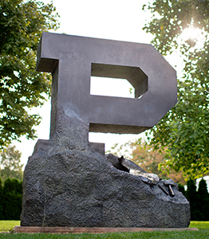

 Purdue University was founded in 1869 under the Morrill Act of 1862. John Purdue, a local merchant, gave $150,000 to begin the University. Tippecanoe County gave $50,000 and local residents gave 100 acres for the new university. The Indiana State Legislature agreed to name the new school Purdue in gratitude to its largest benefactor. The new university began classes on September 16, 1874 with six instructors and 39 students. Currently, Purdue University has an enrollment of over 41,000 undergraduate (75%) and graduate students (23%). Approximately 2,000 full-time faculty teach and conduct research in Purdue's 157 principle buildings with 377 total buildings on 2,307 acres. Purdue University's schools include: agriculture; consumer and family science; education; engineering; liberal arts; management; pharmacy and pharmaceutical sciences; nursing; science; technology; and veterinary medicine. Purdue offers 6,700 courses in 200 specializations. For more than a quarter century, Purdue University has been the largest or second largest in undergraduate engineering enrollment in the country. Purdue research exceeds $347.1 million a year using more than 400 research labs. The University's decentralized 14 library system contains over 2.3 million volumes of information, including a substantial psychology library that has merged with the Humanities, Social Sciences, and Education library located in Stewart Center. Purdue University is committed to fostering and maintaining an inclusive community that values the inherent worth and value of every person. A few notable policies highlight this commitment and are found below.